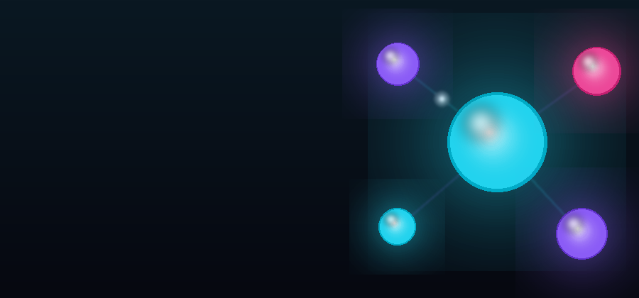

// selected work
Three systems worth a deep look
Flagships from two years of independent R&D — each one designed, built and operated end-to-end.

🐧 Penguin Command
A terminal-native AI agent in Rust: custom VT emulator, layered safety engine, goal autonomy and a sandboxed web reader — inside any terminal.
RustTUILLM agentsSafety
See it work →

🕸 Spider Net
A locally hosted search engine: interest-scored crawl scheduling, block-compressed inverted index, hierarchical routing and local LLM re-ranking.
PythonSearchRAGDocker
See it work →

🧪 Evaluation Protocol Research
Eight hard gates that caught our own wrong results — a reusable protocol from six small-scale architecture projects, negative results included.
PyTorchMethodologyTransformers
Read the protocol →